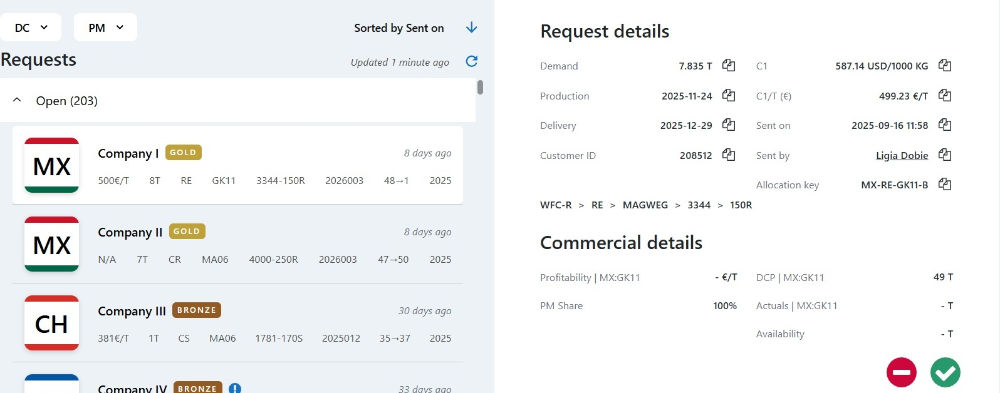
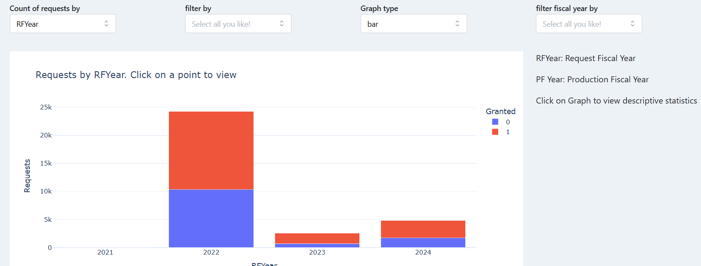
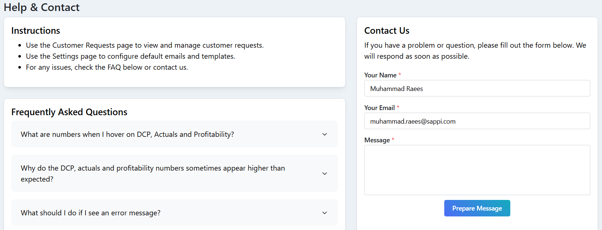
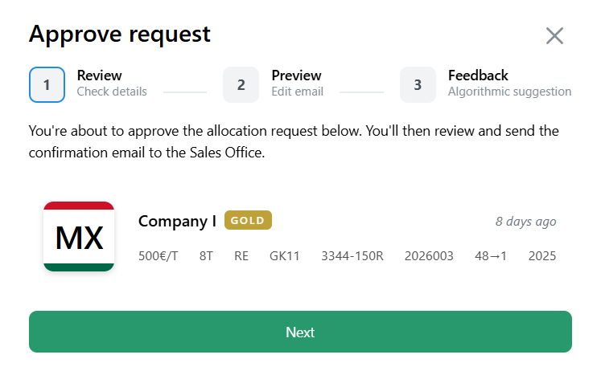

Scan the queue
Review open requests in a consistent list, with key attributes visible at a glance.
Project case study · Sales operations
A dynamic allocation and analytics for Sappi that brings request review and the commercial context behind each decision into one workflow.

01 / The challenge
Salespeople need to assess allocation requests against several pieces of information. When requests and the context for evaluating them are spread across separate checks, routine review takes time and makes it harder to see the full picture.
The project set out to centralize those checks: help the team scan incoming requests, understand the details that matter, and move to an informed next step without losing sight of the request itself.
02 / The approach
The interface pairs a scannable request list with a focused detail view. A salesperson can move from a request to the related demand, production and delivery information, customer details, and commercial indicators in the same workspace.
Review open requests in a consistent list, with key attributes visible at a glance.
Bring operational and commercial details together to support a more complete review.
Keep the decision action close to the information needed to evaluate each request.
03 / A wider view
Alongside request-level review, the application includes an analytics view for exploring allocation activity. Filters let users shape the view around the dimensions relevant to their question, while interactive charts make it easier to inspect patterns in the data.
This gives the workflow both a close-up view for handling a request and a broader lens for understanding activity over time.

04 / Supporting the workflow
A useful operational tool needs more than a decision screen. The application includes a guided approval path—from reviewing a request to previewing its confirmation email—and support content for common questions, so people can move through the workflow with clearer next steps.


Intended impact
By bringing allocation checks into one place, the application is designed to reduce the effort involved in daily request reviews and give salespeople a clearer, more consistent path from incoming request to action.